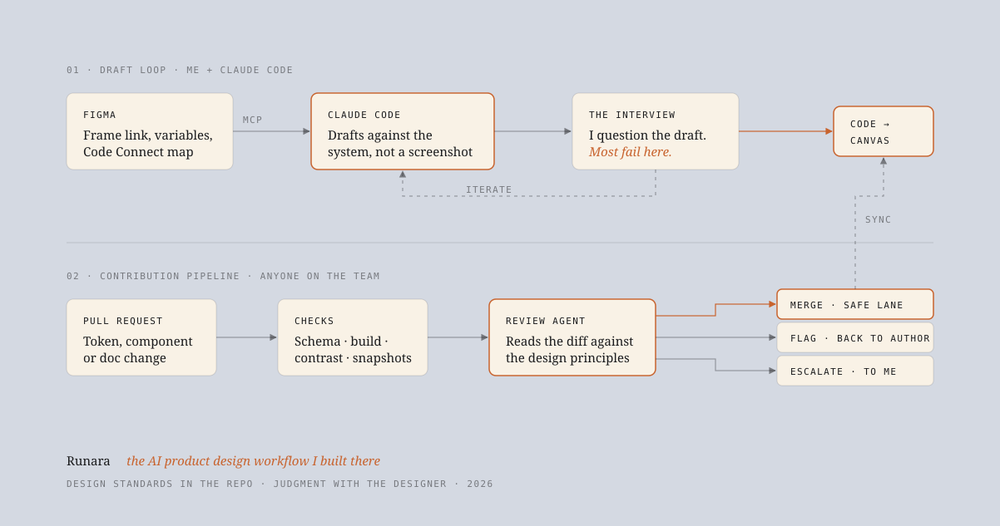

High time you changed your design workflow.
The workflow I was trained in was built for handoff. The one I run now has no handoff in it. It came together at Runara, where I own the design system and the tooling around it: the system lives in a repo, Claude Code can read and write the Figma file, and a review agent lets engineers and other designers contribute without waiting on me. This is how I got here, what the machine gets wrong, and where I still make every call myself.

The first team I joined ran the workflow the industry had settled on a decade earlier. I did every step of it.
It went like this. Research in a deck. Wireframes in Sketch. A symbol library that one person maintained and everyone detached from. A clickable prototype in InVision for the stakeholder review, which was a meeting, which was where the design actually got decided. Then the part that took the most time and produced the least value: handoff. I exported to Zeplin, wrote redlines for the things Zeplin missed, sat in a "walkthrough" with engineering, and answered Slack questions about spacing for the next two weeks.
Then the build shipped, and it did not match. Not because anyone was careless. Because the design lived in one place, the code lived in another, and the only bridge between them was me, explaining. Design QA was a spreadsheet of screenshots with red circles. The design system was a Sketch library plus a Confluence page, and the contribution model was "ask Nandha." I was the bottleneck by design, and I was proud of it, because being the bottleneck felt like being the standard.
I want to be fair to that workflow. It was rigorous. It taught me to think in components, to specify states, to write a redline that an engineer could not misread. Most of what I know about UI I learned by having to explain it to someone who was going to build it without me in the room. But the whole shape of it was organised around a single assumption: the designer produces a picture, and someone else turns the picture into the product.
The picture stopped being the source of truth. That broke the workflow more than any tool did.
Two things happened close together. Figma shipped an MCP server, which means an AI agent can read a frame as structure rather than as a screenshot: the layer hierarchy, the variables behind every colour and spacing value, and the Code Connect map that says which production component a Figma component corresponds to.1 And Claude Code became something a designer could actually sit in front of all day. Give it a frame link, and it writes against your real components and tokens instead of approximating from pixels. Ask it to push what it built back, and it lands in Figma as editable layers.2
Figma's own 2026 report puts a number on what that did to the job: designers participating in development nearly doubled in a year, from 21 to 41 percent.3 I am one of them. But the interesting change is not that I write code now. It is that the artefact I hand over is no longer a picture. It is a working screen, built from the system, that engineering reviews as a pull request rather than reconstructs from a spec.
Once that was true, handoff stopped being a phase. And once handoff stopped being a phase, everything I had built my process around, the redlines, the walkthroughs, the QA spreadsheet, became overhead with nothing to attach to.
- Research synthesis in a deck
- Wireframes, then hi-fi in Sketch
- Detach from the library when it gets in the way
- InVision prototype for the stakeholder meeting
- Export to Zeplin, add redlines for the gaps
- Handoff walkthrough with engineering
- Two weeks of spacing questions in Slack
- Design QA against the build, screenshots with red circles
- Design system updated later, by me, if I remember
- Standards first: tokens, principles, and component rules in the repo
- Research synthesis, still a document, now also read by the agent
- Draft the screen with Claude Code against the system, from a Figma frame or from a brief
- Interview the draft. Reject most of it. Iterate in the same session
- Push the result back to Figma as editable layers for the team to see
- Open a pull request. Engineering reviews working UI, not a spec
- Any teammate opens their own PR against the design system
- Checks run, the review agent reads the diff, and it merges, flags, or escalates
- System stays current because contributing is cheaper than working around it
I spend the first week of any project writing the rules the machine has to design inside.
The mistake I made in the first month was prompting the way people prompt image generators: describe the screen, admire the output, describe it again. It produced plausible UI that belonged to no product. What fixed it was doing the design-system work first and treating it as the prompt.
Concretely, the repo now holds four things before any screen exists. The tokens, in the W3C Design Tokens format, built out to CSS, Swift, and Kotlin by Style Dictionary, so there is one file that says what "muted text" means everywhere.4 A CLAUDE.md that reads like a design principles page, not a style guide: what the product is for, who it is for, what we never do, which component to reach for in which situation. Skills for each component family, so "add a filter bar" pulls in the rules for density, empty states, and keyboard behaviour without me restating them. And Code Connect mappings, so when Claude Code reads a Figma frame it sees "this is our Button, primary, medium" rather than a rectangle with a fill.
Then the loop. I give Claude Code a frame link or a paragraph of intent. It drafts. I do not accept the draft. I interview it.
Iteration is the same session. "Collapse the secondary actions into an overflow, the primary is competing with three things." "The loading state is a spinner, use the skeleton pattern from the list component." "That is the wrong elevation for a sheet on mobile." Each of those is a sentence, and each one lands in working code in under a minute, which is the part that changed the pace of my work more than anything. A round of critique that used to cost an afternoon of moving rectangles now costs the time it takes to say what is wrong.
When it holds up, I push it back to Figma. Not because Figma is the source of truth anymore, but because it is where the rest of the team looks, and a working screen they can annotate beats a link to a branch.
It designs the average product. My job is to know what makes ours not average.
I keep a running list of the ways drafts go wrong, because the pattern is stable enough to design around. These are the ones that show up every week.
That last row is the whole method. The agent is not getting smarter between sessions. The repo is. Every rejected draft either teaches me something about the product or teaches the system something about the product, and I try to make sure it is the second one as often as possible.
The design system is only alive if people other than me can change it. So I stopped being the gate.
Here is the problem every design system owner knows. Contribution is welcome in principle and gated in practice, and the gate is one person's calendar. Zeroheight's 2026 survey found most teams say they encourage open contribution while more than two in five admit to gatekeeping it.5 I was both of those teams. Engineers would need a token or a variant, find me busy, and ship a local override. Six months later the system described a product that no longer existed.
What I built at Runara is a pipeline where the review is done by an agent that has read the same principles I would apply, and I only see the changes that need a human.
The line between the lanes is the design decision here, and I drew it conservatively. The merge lane is narrow on purpose: additive, token-resolved, every state present, no primitive touched, all checks green. Everything else goes to a person. The point was never to remove judgment from the system. It was to stop spending my judgment on the changes that did not need it.
This is what a flag looks like when it lands. It is the part of the pipeline I rewrote most, because a review that says "wrong" without a reason teaches nothing and gets ignored.
Blocking. This changes the primitive color.gray.500 from #6B6F76 to #8A8E95. That primitive is aliased by color.text.muted, which is used by 14 components, not only the reports table. On surface.card the new value measures 3.6:1, below the AA threshold of 4.5:1 for body copy set in the accessibility rule (CLAUDE.md, "Never ship text below AA on any theme pair").
What I think you wanted. The table's secondary column reads too heavy against the row striping. That is a component-level problem, not a palette-level one.
Suggested fix. Leave the primitive alone. Add a semantic alias table.cell.secondary pointing at color.gray.500, and change the Table component to use the existing type.body.sm scale for that column. That reads lighter without changing contrast anywhere else. If you make that change, this PR qualifies for the merge lane.
Reasons cited: accessibility rule, primitive-change rule, token-scope rule. Escalated to a human: no. Author notified in Slack.
Two rules make this work, and neither is about the model. First, the agent has to say what it thinks the author was trying to do. A review that only says no gets worked around. A review that says "here is the version of this that would merge" gets acted on, usually within the hour. Second, it has to name a person. A flag that goes to a channel is nobody's. A flag that goes to the author with the component owner copied gets resolved.
The tools took the handoff away. They did not take the judgment. If anything they made it the whole job.
The standards are the design work now. A week spent on tokens, principles, and component rules used to feel like overhead before the "real" design. It is the opposite. It is the only week where what I decide gets multiplied by every draft and every PR that follows.
The interview is the craft. Ten years ago the skill was producing the screen. Now the screen is cheap, and the skill is knowing, in one look, why this one is wrong for these users. That is the same taste I was building with redlines. It just has somewhere to go faster.
The gate moved, it did not disappear. The merge lane is small and I intend to keep it small. Every time the agent approves something I would not have, the lane gets narrower, and the rule that would have caught it goes in the repo. That is the part of this workflow I expect to still be doing in a year.
What still worries me. A system that is easy to contribute to can drift by accretion, one reasonable alias at a time. I read the merged-lane log every Friday. I am not sure yet that is enough.
References
- Figma, Figma MCP server: tools and prompts. The design-context, variable-definition, and Code Connect map tools an agent reads a frame through.
- Figma, How designers can use Claude Code, and From Claude Code to Figma, February 2026, on pushing built UI back to the canvas as editable layers.
- Figma, 2026 AI Report. Designers participating in development rose from 21% to 41% year over year.
- W3C Design Tokens Community Group, Design Tokens Format Module, first stable release October 2025, and Style Dictionary for the platform builds.
- zeroheight, Design Systems Report 2026. Token adoption at 84% of teams; most teams encourage contribution while more than two in five gatekeep it.
- Anthropic, Claude Code GitHub Actions. Automated review on pull request events, with CLAUDE.md and repository skills as the review criteria.